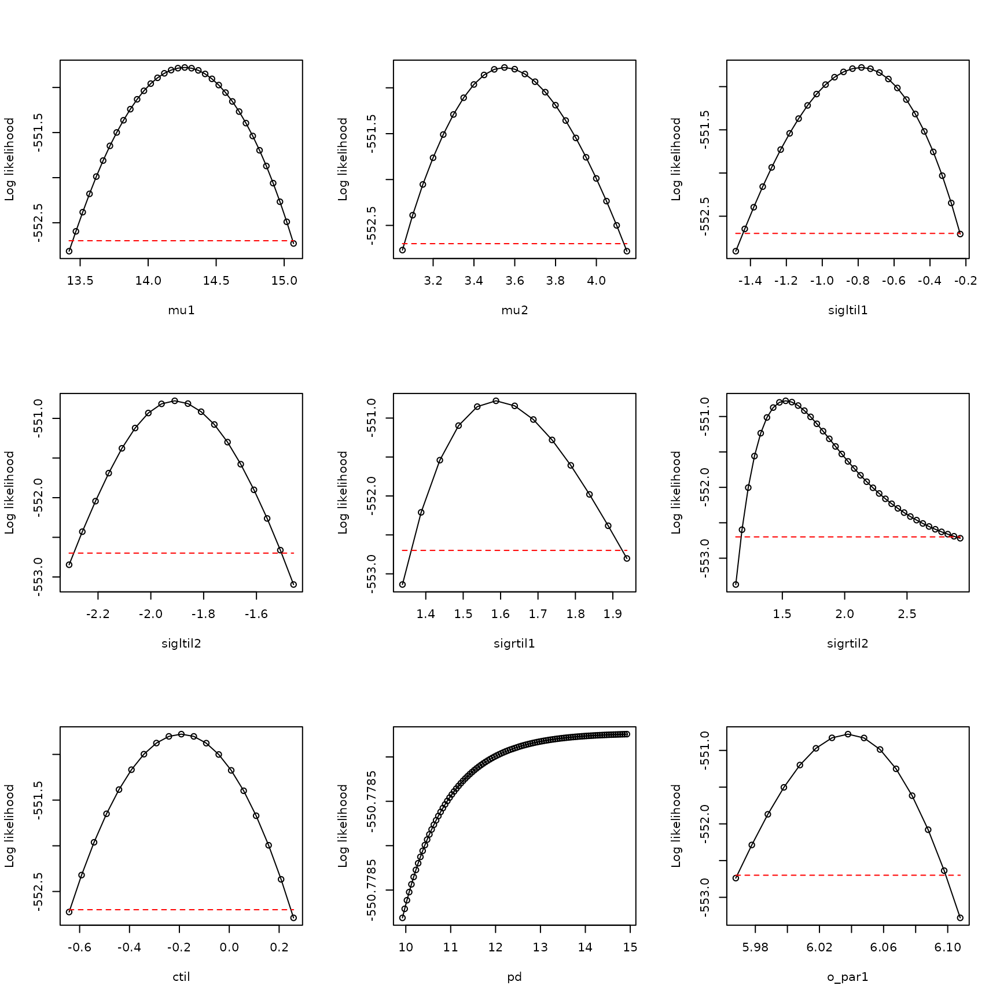
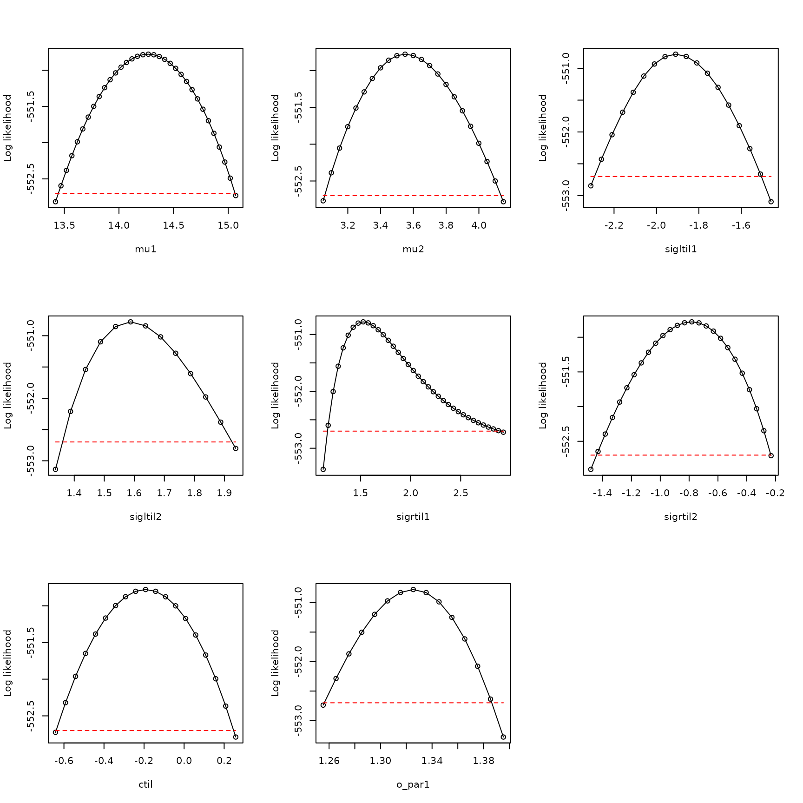

Boundary models
Daniel C. Reuman
Department of Ecology and Evolutionary Biology and Center for Ecological Research, University of KansasEmilio Berti
German Center for Integrative Biodiversity ScienceSource:
vignettes/03-boundary_models.Rmd
03-boundary_models.Rmd\[ \newcommand{\mean}[1]{\overline{#1}} \newcommand{\var}{\text{var}} \newcommand{\cov}{\text{cov}} \newcommand{\cor}{\text{cor}} \newcommand{\Rp}{\text{Re}} \newcommand{\E}{\text{E}} \newcommand{\ltsgr}{\text{ltsgr}} \newcommand{\expit}{\text{expit}} \newcommand{\logit}{\text{logit}} \]
Abstract. We here show a troublshooting example in the case where the best model considered does not show adequate evidence that the likelihood function was fully optimized, the best parameters obtained by optimization show \(p_d\) close to \(1\), and the profile for \(p_d\) is not dome shaped. This is a common case. The boundary model with \(p_d = 1\) is used. This example is based on occurrence data from GBIF for Blarina carolinensis, the southern short-tailed shrew.
The southern short-tailed shrew, Blarina carolinensis, is found in the southeastern United States.
We start by loading in the data:
## [1] 1156 39 6
dimnames(env_array)[[3]]## [1] "BIO01" "BIO10" "BIO11" "BIO12" "BIO16" "BIO17"
occ <- example_3$occ_vec
length(occ)## [1] 1156Here, there are 6 environmental variables recorded for 39 years in
1156 locations, with accompanying detections and pseudo-absences in the
variable occ. The first three environmental variables
(BIO1, BIO10, BIO11) are temperature variables, and the last three
(BIO12, BIO16, BIO17) are precipitation variables. BIO1 is mean annual
temperature, BIO10 is mean temperature of the warmest quarter, BIO11 is
mean temperature of the coldest quarter, BIO12 is annual precipitation,
BIO16 is precipitation of the wettest quarter, and BIO17 is
precipitation of the driest quarter.
Now look at the distributions of values of environmental variables to make sure they are not on wildly different scales, which would cause problems for optimization:
## BIO01 BIO10 BIO11 BIO12 BIO16 BIO17
## 2.5% 11.61870 21.70901 1.477658 76.36044 9.12790 2.133369
## 25% 15.31648 25.24791 6.289062 108.62843 13.18716 4.505094
## 50% 17.16010 26.45451 9.055910 126.29746 15.76004 5.947245
## 75% 19.20414 27.43751 11.991494 146.79118 18.83666 7.377723
## 97.5% 22.55861 29.21995 17.613174 190.28207 27.04961 10.422263These distributions look basically OK.
Now fit 15 models, each from 25 starting conditions:
models <- matrix(c(1,0,0,0,0,0,
0,1,0,0,0,0,
0,0,1,0,0,0,
0,0,0,1,0,0,
0,0,0,0,1,0,
0,0,0,0,0,1,
1,0,0,1,0,0,
1,0,0,0,1,0,
1,0,0,0,0,1,
0,1,0,1,0,0,
0,1,0,0,1,0,
0,1,0,0,0,1,
0,0,1,1,0,0,
0,0,1,0,1,0,
0,0,1,0,0,1), nrow=15, byrow=TRUE)
all_model_results <- list()
for (i in 1:nrow(models))
{
env_dat <- env_array[,,models[i,]==1,drop=FALSE]
starts <- xsdm::start_parms(env_dat,num_starts=25)
all_optim_results <- list()
for (j in 1:nrow(starts))
{
all_optim_results[[j]] <- optim(par=starts[j,],fn=xsdm::loglik_math,
method="BFGS",
env_dat=env_dat, occ=occ,negative=TRUE,
control=list(trace=0))
}
all_model_results[[i]] <- all_optim_results
}Rank the models by BIC, bearing in mind that we’ve been working with the negative of the likelihood:
model_BICs <- sapply(X=all_model_results,
FUN=function(x){
best_loglik = min(sapply(X=x, FUN=function(y){y$value}))
num_parms = length(x[[1]]$par)
n = length(occ)
BIC = 2*best_loglik + num_parms*log(n)
return(BIC)
}
)Also by AIC:
model_AICs <- sapply(X=all_model_results,
FUN=function(x){
best_loglik = min(sapply(X=x, FUN=function(y){y$value}))
num_parms = length(x[[1]]$par)
AIC = 2*best_loglik + 2*num_parms
return(AIC)
}
)
inds <- order(model_BICs)
rbind(model_BICs[inds],model_AICs[inds])## [,1] [,2] [,3] [,4] [,5] [,6] [,7] [,8]
## [1,] 1165.031 1172.509 1175.884 1190.920 1193.879 1194.610 1196.463 1201.064
## [2,] 1119.557 1127.035 1150.620 1145.446 1148.404 1149.136 1171.200 1155.590
## [,9] [,10] [,11] [,12] [,13] [,14] [,15]
## [1,] 1201.281 1202.077 1210.059 1216.144 1288.876 1292.384 1310.529
## [2,] 1155.806 1156.602 1164.584 1190.880 1263.613 1267.121 1285.266
plot(model_BICs,model_AICs,type="p",xlab="BIC",ylab="AIC")
order(model_BICs)## [1] 9 12 2 7 8 15 1 11 10 13 14 3 5 4 6
order(model_AICs)## [1] 9 12 7 8 15 2 11 10 13 14 1 3 5 4 6Looks like in this case the AIC and the BIC are pretty aligned with each other. Look at the best two model models:
models[order(model_BICs)[1:2],]## [,1] [,2] [,3] [,4] [,5] [,6]
## [1,] 1 0 0 0 0 1
## [2,] 0 1 0 0 0 1So these are two-variable models.
Let’s use the best model. Optimize it a bit harder:
i <- 9
env_dat <- env_array[,,models[i,]==1,drop=FALSE]
starts <- xsdm::start_parms(env_dat,num_starts=100)
best_model_results <- list()
for (j in 1:nrow(starts))
{
best_model_results[[j]] <- optim(par=starts[j,],fn=xsdm::loglik_math,
method="BFGS",
env_dat=env_dat, occ=occ,negative=TRUE,
control=list(trace=0))
}
values <- sapply(X=best_model_results, FUN=function(y){y$value})
inds <- order(values)
best_model_results <- best_model_results[inds]
min(sapply(X=all_model_results[[i]], FUN=function(y){y$value}))## [1] 550.7784
best_model_results[[1]]$value## [1] 550.7784Pretty similar, so we HAD pretty much fully optimized before.
Now have a look at the result for this model.
examine_optim_results <- function(optim_results,mask=NULL)
{
#put optimization results in order from best to worst
bestlogliks <- sapply(X=optim_results,FUN=function(x){x$value})
inds <- order(bestlogliks)
bestlogliks <- bestlogliks[inds]
optim_results <- optim_results[inds]
#model convergence
convergences <- sapply(X=optim_results,FUN=function(x){x$convergence})
#compute distances to the best result in parameter space
best_parms_math <- optim_results[[1]]$par
parms_dists_to_best <- lapply(
X=optim_results,
FUN=function(x){
xsdm::dist_between_params(
x$par,
best_parms_math,
mask=mask,
give_closest_rep=TRUE)
}
)
parms_dists <- sapply(X=parms_dists_to_best, FUN=function(x){x$distance})
#look at the best 5 results in parameter space
bestparms <- sapply(X=parms_dists_to_best, FUN=function(x){unlist(x$representative)})
#put it all together
return(rbind(bestlogliks,convergences,parms_dists,bestparms))
}
h <- examine_optim_results(best_model_results)
t(h[,1:8])## bestlogliks convergences parms_dists mu1 mu2 sigltil1
## [1,] 550.7784 0 0.0000000000 14.26891 3.549557 0.4576273
## [2,] 550.7784 0 0.0001446034 14.26892 3.549587 0.4576403
## [3,] 550.7784 0 0.0000609491 14.26891 3.549573 0.4576361
## [4,] 550.7784 0 0.0001370572 14.26892 3.549587 0.4576398
## [5,] 550.7784 0 0.0001390742 14.26891 3.549593 0.4576358
## [6,] 550.7784 0 0.0002642835 14.26892 3.549624 0.4576387
## [7,] 550.7784 0 0.0001351676 14.26893 3.549543 0.4576448
## [8,] 550.7784 0 0.0001916664 14.26897 3.549577 0.4576510
## sigltil2 sigrtil1 sigrtil2 ctil pd o_mat1 o_mat2
## [1,] 0.1481546 4.892066 4.602596 -0.1921848 0.9999960 0.9700436 -0.2429307
## [2,] 0.1481574 4.892031 4.602676 -0.1921751 0.9999957 0.9700426 -0.2429348
## [3,] 0.1481537 4.892095 4.602592 -0.1921880 0.9999948 0.9700433 -0.2429321
## [4,] 0.1481572 4.892030 4.602673 -0.1921757 0.9999945 0.9700426 -0.2429351
## [5,] 0.1481574 4.892049 4.602698 -0.1921752 0.9999936 0.9700421 -0.2429367
## [6,] 0.1481601 4.892012 4.602689 -0.1921887 0.9999934 0.9700422 -0.2429366
## [7,] 0.1481525 4.892033 4.602843 -0.1921551 0.9999889 0.9700435 -0.2429312
## [8,] 0.1481574 4.892008 4.602524 -0.1922446 0.9999874 0.9700449 -0.2429257
## o_mat3 o_mat4
## [1,] 0.2429307 0.9700436
## [2,] 0.2429348 0.9700426
## [3,] 0.2429321 0.9700433
## [4,] 0.2429351 0.9700426
## [5,] 0.2429367 0.9700421
## [6,] 0.2429366 0.9700422
## [7,] 0.2429312 0.9700435
## [8,] 0.2429257 0.9700449This looks good, in the sense that it looks like multiple optimizations arrived at about the same place in parameter space, which is some evidence that we may have found the global maximum of the likelihood function The only problem is that \(p_d\) is very close to \(1\).
Let’s profile this model and see what we get:
pnames <- names(xsdm::make_mask_names(2))
all_profiles <- list()
linc <- c(rep(0.05,8),0.01)
rinc <- c(rep(0.05,8),0.01)
for (counter in 1:9)
{
all_profiles[[counter]] <- xsdm::profile_likelihood(
profile_parameter=pnames[counter],
increment_left=linc[counter],
increment_right=rinc[counter],
num_steps_left=50,
num_steps_right=50,
alpha=0.95,
optim_param_vector=best_model_results[[1]]$par,
env_dat=env_dat,
occ=occ,
mask=NULL,
num_threads=6
)
}
names(all_profiles) <- pnamesNow plot these profiles:
plot_tool <- function(ap,index)
{
x <- ap[[index]]$profile$value_math
y <- ap[[index]]$profile$loglik
xlab <- names(ap)[index]
thresh <- ap[[index]]$threshold
plot(x,y,
type="o",xlab=xlab,
ylab="Log likelihood")
lines(range(x),rep(thresh,2),type="l",
lty="dashed",col="red")
}
par(mfrow=c(3,3))
plot_tool(all_profiles,1)
plot_tool(all_profiles,2)
plot_tool(all_profiles,3)
plot_tool(all_profiles,4)
plot_tool(all_profiles,5)
plot_tool(all_profiles,6)
plot_tool(all_profiles,7)
plot_tool(all_profiles,8)
plot_tool(all_profiles,9)
So yes, there is the expected problem with pd. This is a common problem and it manifests in the manner illustrated here.
The solution is to use the boundary model with \(p_d = 1\):
env_dat <- env_array[,,models[i,]==1,drop=FALSE]
dim(env_dat)## [1] 1156 39 2
mask <- c(pd=Inf) #use Inf because masks are given on the math scale
mask## pd
## Inf
new_starts <- xsdm::start_parms(env_dat[occ==1,,,drop=FALSE],
mask=mask,num_starts=100)
head(new_starts)## # A tibble: 6 × 8
## mu1 mu2 sigltil1 sigltil2 sigrtil1 sigrtil2 ctil o_par1
## <dbl> <dbl> <dbl> <dbl> <dbl> <dbl> <dbl> <dbl>
## 1 15.6 7.89 0.297 1.05 1.19 0.702 -1.32 -3.39
## 2 18.1 5.25 0.990 0.354 0.497 1.40 -0.744 6.04
## 3 19.3 6.57 -0.0496 0.700 1.54 0.356 -1.61 -8.10
## 4 16.9 3.92 0.644 0.00711 0.843 1.05 -1.03 1.33
## 5 17.5 5.91 0.124 0.874 1.36 0.182 -1.46 -5.74
## 6 19.9 8.55 0.817 0.180 0.670 0.875 -0.887 3.68
bdry_optim_results <- list()
for (j in 1:nrow(new_starts))
{
bdry_optim_results[[j]] <- optim(par=new_starts[j,],fn=xsdm::loglik_math,
method="BFGS",
env_dat=env_dat,occ=occ,mask=mask,negative=TRUE,
control=list(trace=0,maxit=500))
}Have a look at these results:
h <- examine_optim_results(bdry_optim_results,mask=mask)
t(h[,1:10])## bestlogliks convergences parms_dists mu1 mu2 sigltil1
## [1,] 550.7784 0 0.000000e+00 14.26898 3.549565 0.1481579
## [2,] 550.7784 0 4.800380e-05 14.26896 3.549569 0.1481577
## [3,] 550.7784 0 2.621185e-05 14.26898 3.549556 0.1481583
## [4,] 550.7784 0 1.251270e-04 14.26895 3.549562 0.1481553
## [5,] 550.7784 0 1.242072e-04 14.26905 3.549547 0.1481583
## [6,] 550.7784 0 6.697159e-05 14.26896 3.549563 0.1481568
## [7,] 550.7784 0 1.334626e-04 14.26898 3.549544 0.1481556
## [8,] 550.7784 0 1.228045e-04 14.26892 3.549584 0.1481572
## [9,] 550.7784 0 1.076407e-04 14.26893 3.549582 0.1481573
## [10,] 550.7784 0 1.084495e-04 14.26892 3.549589 0.1481576
## sigltil2 sigrtil1 sigrtil2 ctil pd o_mat1 o_mat2 o_mat3
## [1,] 4.892005 4.602648 0.4576596 -0.1921786 1 0.2429296 0.9700439 -0.9700439
## [2,] 4.892013 4.602687 0.4576510 -0.1921726 1 0.2429303 0.9700437 -0.9700437
## [3,] 4.892046 4.602512 0.4576606 -0.1921872 1 0.2429291 0.9700440 -0.9700440
## [4,] 4.892064 4.602624 0.4576539 -0.1921786 1 0.2429291 0.9700440 -0.9700440
## [5,] 4.891977 4.602488 0.4576790 -0.1922139 1 0.2429287 0.9700441 -0.9700441
## [6,] 4.892015 4.602650 0.4576518 -0.1921791 1 0.2429327 0.9700431 -0.9700431
## [7,] 4.892069 4.602353 0.4576443 -0.1922112 1 0.2429266 0.9700447 -0.9700447
## [8,] 4.892030 4.602648 0.4576392 -0.1921772 1 0.2429327 0.9700431 -0.9700431
## [9,] 4.891997 4.602657 0.4576414 -0.1921772 1 0.2429322 0.9700433 -0.9700433
## [10,] 4.892044 4.602678 0.4576418 -0.1921761 1 0.2429322 0.9700433 -0.9700433
## o_mat4
## [1,] 0.2429296
## [2,] 0.2429303
## [3,] 0.2429291
## [4,] 0.2429291
## [5,] 0.2429287
## [6,] 0.2429327
## [7,] 0.2429266
## [8,] 0.2429327
## [9,] 0.2429322
## [10,] 0.2429322This looks like enough of them converged to the same thing to say that it looks like I successfully optimized. Get the likelihood:
values <- sapply(X=bdry_optim_results, FUN=function(y){y$value})
inds <- order(values)
bdry_optim_results <- bdry_optim_results[inds]
best_model_results[[1]]$value## [1] 550.7784
bdry_optim_results[[1]]$value## [1] 550.7784So the likelihood is the same as for the previous (non-boundary) model. But we have one less parameter that has been fitted. Get the AIC and BIC to see the effects:
AIC <- unname(2*bdry_optim_results[[1]]$value+
2*length(bdry_optim_results[[1]]$par))
AIC_old <- unname(2*best_model_results[[1]]$value+
2*length(best_model_results[[1]]$par))
AIC## [1] 1117.557
AIC_old## [1] 1119.557
AIC-AIC_old## [1] -2.000034
BIC <- unname(2*bdry_optim_results[[1]]$value+
log(length(occ))*length(bdry_optim_results[[1]]$par))
BIC_old <- unname(2*best_model_results[[1]]$value+
log(length(occ))*length(best_model_results[[1]]$par))
BIC## [1] 1157.979
BIC_old## [1] 1165.031
BIC-BIC_old## [1] -7.052755## [1] 7.052721So the AIC and BIC are better for the boundary model compared to the earlier model, and by the expected amounts. We go with the simpler model.
Let’s profile this boundary model and see what we get:
pnames <- names(xsdm::make_mask_names(2))
pnames <- pnames[pnames!="pd"]
mask## pd
## Inf
all_bdry_profiles <- list()
linc <- c(rep(0.05,7),0.01)
rinc <- c(rep(0.05,7),0.01)
for (counter in 1:8)
{
all_bdry_profiles[[counter]] <- xsdm::profile_likelihood(
profile_parameter=pnames[counter],
increment_left=linc[counter],
increment_right=rinc[counter],
num_steps_left=50,
num_steps_right=50,
alpha=0.95,
optim_param_vector=bdry_optim_results[[1]]$par,
env_dat=env_dat,
occ=occ,
mask=mask,
num_threads=6
)
}
names(all_bdry_profiles) <- pnamesNow plot these profiles:
par(mfrow=c(3,3))
plot_tool(all_bdry_profiles,1)
plot_tool(all_bdry_profiles,2)
plot_tool(all_bdry_profiles,3)
plot_tool(all_bdry_profiles,4)
plot_tool(all_bdry_profiles,5)
plot_tool(all_bdry_profiles,6)
plot_tool(all_bdry_profiles,7)
plot_tool(all_bdry_profiles,8)
These are dome-shaped, suggesting the likelihood function is well-behaved in the vacinity of the maximum we found, and inferences can be made. Note these profiles look essentially the same as those obtained previously, except \(\vec{\sigma}_L\) and \(\vec{\sigma}_R\) have been switched (which can happen, given redundancy in parameters explained in “How to fit xsdm models with species occurrence data using xsdm”). The overall lesson is, when optimizing the xsdm likelihood function gives a best model with \(p_d\) close to \(1\) and a non-dome-shaped profile for \(p_d\), use the boundary model with \(p_d = 1\).